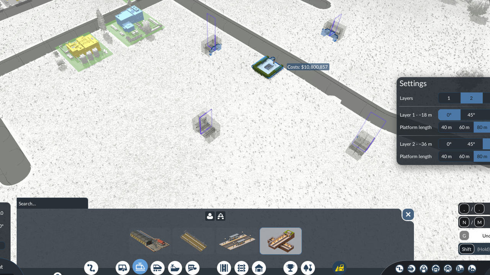

01 / AT STREET LEVEL
Surface
Through stations connect their platforms via an underpass or level crossings at both ends. Termini have a landscaped forecourt. Stations align with nearby roads for easier placement.
GROUND LEVEL
Build a light rail network with your existing trams. Open Light Rail between Road and Rail to find the tram depot, fenced track, configurable stations and the Underground Interchange.
Through stations connect their platforms via an underpass or level crossings at both ends. Termini have a landscaped forecourt. Stations align with nearby roads for easier placement.
GROUND LEVELChoose a track depth of −18, −36, −54 or −72 m for a standalone station. The default is −18 m. A fixed station hall links both platforms to the street.
TRACKS AT −18 TO −72mCovered platforms on a concrete viaduct, with stairs from a central street-level entrance. Choose parallel or perpendicular alignment with the road.
TRACKS AT +12m

Low metal fences give your line a separate right of way. Connect directly to ordinary electric tram track and road crossings, with native tram traffic handling.
Use the existing tram depot and vehicles. This mod adds station and infrastructure options; it does not include a new vehicle fleet.
Run through services and terminating services at the same station with Turnback. Dedicated termini use a scissors crossover so trams can change ends without a turning loop.
Choose from five lengths in 20 m steps. Each track holds 35 waiting passengers per 20 m of platform, or 140 per track at 80 m. Enable Turnback on a through station to add a crossover at both ends.
 Open the original capture ↗
Open the original capture ↗Build one station with up to four underground levels. Passengers can change lines via internal stairs, and all platforms share a street-level entrance.
The first level is 18 m below the surface, with another 18 m between levels. Each level has two tracks and through platforms with Turnback.
Set each level to 40, 60, 80, 100 or 120 m. Waiting capacity follows the platform length on each track.
Set each level’s angle independently and rotate the entire interchange during placement.

The Light Rail filter in the native line manager shows tram lines serving at least one built-in or API-registered ULR station. Those lines also appear under the standard Tram filter.

Build a station pack with custom visuals and shared station logic. Choose an underground level for a standalone station, or combine underground, surface and elevated levels using the multi-level API.
Updates and extensions remain backward compatible with the documented v1 contract. If a change must break it, a new API version will appear alongside v1. Existing conforming v1 add-ons stay supported, without forced migration.
The core release number and API version are independent.
Read the Station API v1 documentation Build a multi-level station
Custom components replace ordinary complete 20m sections. Short infills and fixed stair zones remain core-owned. The API validates the schema; creators must test their own model geometry and colliders.
The core is all players need. The developer kit and example mod are separate, optional downloads for station creators.
The complete station family, fenced track and dedicated construction menu. Uses your existing tram vehicles.
Get Ultimate Light Rail on mod.io ↗CORE MOD / UI INCLUDEDThe API reference, model dimensions and source for a multi-level station with separate designs per layer.
Download developer kit ↓DOCUMENTATION + SOURCES / NOT A GAME MODA configurable component kit plus an asset-role example, both registered in the shared Light Rail menu.
Download example mod ↓OPTIONAL / REQUIRES THE COREEnable the core and load your save.
Open Light Rail, between Road and Rail.
Place a station, connect track and a tram depot.
Create a line and assign a tram that fits.
Updates and extensions preserve the documented v1 contract. Breaking changes use a new API version alongside v1; existing conforming v1 designs remain supported. Internal builders and generated UI recipes are not public extension points.
API v1 fixes two tracks, platform width and height, entrances, stairs and routes. Customise supported visual components instead. The underground hall is fixed.
Yes. Supply an explicit 20m canopy model through the component API. Surface defaults have no canopy; elevated defaults include one.
Keep the core and any asset mods enabled while their objects remain in a save. Other mods that modify the same construction interface may conflict.
The station and track screenshots show gameplay. The cover and API overview are promotional illustrations.